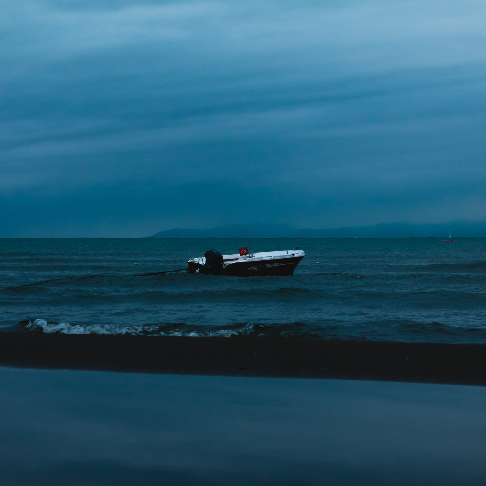

Blue is closely associated with harmony and peace. It is a color that evokes trust, honesty, loyalty and confidence. It reduces stress and creates a sense of relaxation, tranquility and calm. It is the color of trust and responsibility. According to Color Wheel Pro, “light blue is associated with health, healing, tranquility, understanding, and softness. Dark blue represents knowledge, power, integrity, and seriousness.” In addition, blue symbolizes faith, truth and wisdom.

Droning a drowsy syncopated tune, Rocking back and forth to a mellow croon, I heard a Negro play. Down on Lenox Avenue the other night By the pale dull pallor of an old gas light He did a lazy sway . . .

A man git his feet set in a sticky mudbank, A man git dis yellow water in his blood, No need for hopin', no need for doin', Muddy streams keep him fixed for good.

They sparkle like the ocean’s waves, And carry sand from all the lakeI walk along the tip of the sea.That’s where my feet leave prints to be. I walk all the way to the end of the land, The land that holds this beautiful sand.
It's commonly believed that the ocean is blue because it's reflecting the blue sky. But this is a misconception.
The ocean is blue because of the way it absorbs sunlight, according to the National Oceanic and Atmospheric Administration (NOAA).
When sunlight hits the ocean, the water strongly absorbs long-wavelength colors at the red end of the light spectrum, as well as short-wavelength light, including violet and ultraviolet. The remaining light that we see is mostly made up of blue wavelengths.
However, NOAA notes that the ocean may take on other hues, including red and green, if light bounces off objects floating near the surface of the water, such as sediment and algae.
The Ocean
The sky
The sky is dappled by the cloud, a beauty over our motley crew. So we rest on our backs and let our eyes gaze upward, enjoying the nothing that is everything.
Somewhere above this sky, born of the colour of summer Iris, swirl galaxies of brilliant stars. On fine days such as this I feel their energy the same way the smile of one I love infuses my soul, raises me higher. So I pause, let my feet join the serenity of quietness, and breathe. That's when I feel it all the more, sense energy from the trees, the birdsong and the very soil upon which I stand. They say the universe is all connected, as are we all, and in this moment it's so tangible, real.